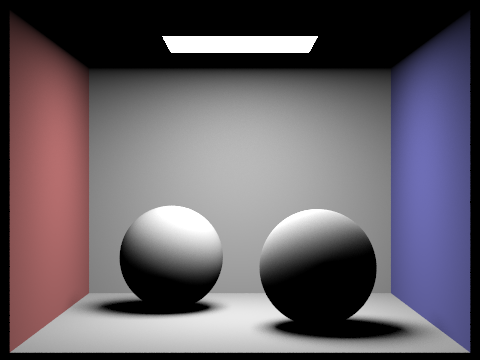
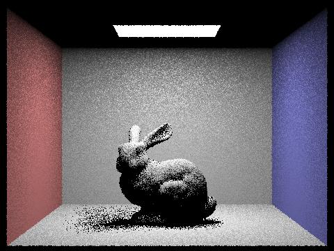
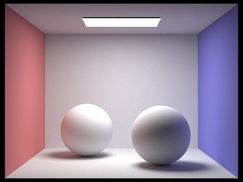
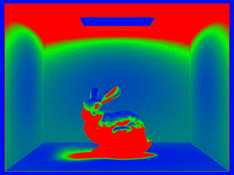

Overview
In this project, we explored how ray tracing works. We learned about generating rays, ray object intersection calculation, BVH acceleration, direct illumination, global illumination, and adaptive sampling. We learned about how rendering speed can be improved using bounding box checking with the help of BVH tree construction, how scene objects can be rendered differently when we specify the number of bounces allowed. The process of ray tracing becomes familiar to us after working on this project and with the help of visualizating our work with the GUI.
Part 1: Ray Generation and Scene Intersection (20 Points)
Walk through the ray generation and primitive intersection parts of the rendering pipeline.
- First, we implement
Camera::generate_ray, we move the original (x,y) by (-.5, -.5) and multiple it with \((2 * tan(radians(hFov / 2)), 2 * tan(radians(vFov / 2)))\). Since the camera sensor lies on the plane Z = -1, we get the new vector \((newX, newY, -1)\) representing (x,y) in camera space. We normalize this vecotr and generate a ray with camera's position and the vector as direction. We also set ray's(max_t, min_t)to its farest and nearest clips. - In the
raytrace_pixel()function, we have the pixel's (x,y), and we want to genreate random rays pointing to the point in range (x:x+1, y:y+1). - Inorder to do so, we use
get_sample()to generate a coordinate in unit sqare, and we plus this to the original x,y and divide it by the width and height of sample buffer to normalize it. - For future use, we set ray's depth to the maximum ray depth.
- For each random ray we generated, we use
est_radiance_global_illumination()to get the expected color/illumination of that ray. Right now we just use normal shading. - After summing up the illumination (default colors) of all sample ray, we divide it by the number of samples and update the corresponding pixel in sample buffer.
Explain the triangle intersection algorithm you implemented in your own words.
In this task, we implemented the Moller Trumbore algorithm to calculate triangle intersection.
Moller Trumbore algorithm is a fast and reliable way to calculate the intersection of a ray and a triangle in 3-D space. By knowing the three vertices of the triangle and ray's origin and direction, we can calculate the time value in ray's formula, and the 2 of the barycentric coordinates to check if the ray intersect with a point inside the triangle. We did following step:
- We first use the Moller Trumbore algorithm to get the \([t, b1, b2]\), where b1 and b2 are two barycentric coordinates.
- After we get the 3d vector we want, we check if t exists within max_t and min_t of the ray
- We also check if
b1, b2, 1 - b1 - b2are all within range [0,1], which is required by the barycentric rule. - If all the the checks in 2, 3 are satisfied, we say the ray intersect with a point in triangle on the plane. In
Triangle::intersect(), we update ray's max_t with the new t, and we update the intersection's information with the new t, new normal at the intersection point, new bsdf, and new primitive (the triangle itself).
Show images with normal shading for a few small .dae files.
|
|

|

|
Part 2: Bounding Volume Hierarchy (20 Points)
Walk through your BVH construction algorithm. Explain the heuristic you chose for picking the splitting point.
The algorithm construct the BVH like a tree datatype where all nodes stores a bounding box data that covers all primitive inside the box. Specifically, all internal node has non-empty left and right child, and all leaf node has non-empty start and end iterator that points to all primitives inside the associated bounding box. \n The BVH tree is constructed using recursion. By checking the number of primitives inside the current bounding box, if it is a leaf node (number of primitives is small enough), we assign primitive iterator properly and return. Otherwise, we split the bounding box via a split axis, classify each primitive to either left bounding box or right bounding box based on their centroid, and make these bounding box left and right child of the current node and perform the same construction on these children recursively. \n The spliting heuristic we used is that we find the average centroid of all primitives. Tested on each split axis (x,y,z axis) with split point using the average centroid on each axis. We then calculate the heuristic scores for each axis by multiplying bounding Volume and number of primitives on each side and sum them up. The axis that yield the smallest heuristic score is the ideal axis to split. We then use that axis to split and use the average controid on that axis as splitting point. By using this heuristic method, we get rid of some largely unbalenced splits.
Show images with normal shading for a few large .dae files that you can only render with BVH acceleration.

|

|

|
|
Compare rendering times on a few scenes with moderately complex geometries with and without BVH acceleration. Present your results in a one-paragraph analysis.
When rendering the "meshedit/maxplanck.dae", it took 60s to complete without BVH acceleration, and 0.08s with BVH acceleration. When rendering the "sky/CBlucy.dae", it took 136s to complete without BVH acceleration, and 0.053s with BVH acceleration. It's clearly obvious that with BVH we do not have to test every signle primitive for each ray, and thus save us much time when rendering.
Part 3: Direct Illumination (20 Points)
Walk through both implementations of the direct lighting function.
Direct light sample over hemisphere
- We use the Monte Carlo estimator to calculate the irradiance on the hitting point.We did following steps to achieve it.

Monte Carlo estimator -
First, we calculate the hit point using the ray and intersection. And we get the direction of the w_out by taking the negtive direction of the ray. We want to create
num_samplesof sample ray, whilenum_samplesequals to the total number of lights multiplies the samples per light. The sample ray has one bounce on the surface and goes in the negative direction camera ray. - For each sample ray, we first generate a sample direction on hemisphere using
hemisphereSampler->get_sample(), turn that into world coordinates, and create the sample ray using this direction and hit point. We set the min_t of the ray to \(EPS\_F\) to avoid numerical precision issue. -
We calculate the \(cos(\theta)\) taking the dot product of normal vector (0,0,1) and random sample direction.
We then use the bvh's intersect method we defined in Part 2 to check if the ray intersects with a surface and store the intersection information if yes. If the ray intersects with an object, we check if that is a light source by callingray_isect.bsdf->get_emission(). If not, this sample would return a 0 lightning. If yes, we can then follow the MC estimator's formula to calculate one instance of the estimator.
We get the BSDF transform vector of the in and out ray on the hitting point, by callingisect.bsdf->f(out, in). We multiple this with the sample radiance and \(cos\theta\) we get in advance. And we divide this by the Sample ray's possibility, which is \(\frac{1}{2\pi}\). We add this number to the total radiance. - Finally, we average the total radiance by the number of samples to get the Monte Carlo Estimator.
Direct light sample over light source
-
Similar to Over-Hemisphere, we still use Monte Carlo Estimation, and we get the hitting point and the w_out ray first. However, instead of create fix number of random sample ray, this time we loop through all the light sources and generate certain numbers of sample Ray
directing toward the light sources. We generate one ray for point light sources and
ns_area_lightray for area light sources. -
For each light source, after we decide the number of samples N we need, we do N iterations. For each round, we get a sample ray by calling the
sample_L()method on Light. We only pass in the hitting point, and we can get the sample ray's direction, distance between hit point and light, and its pdf (possibility function). - To detect if the hitting point surface can actually receive the light from light source, we generate a ray with hit point and sample ray direction, and set its (min_t, max_t) to \((EPS\_F, EPS\_F + DistanceToLight)\) (\(EPS\_F\) to avoid numerical precision issue). We also compute the \(cos(\theta)\) by transforming sample ray's direction to object direction (due to sample_L() property) and dot product with normal vector.
-
We check if the sample ray intersects with a object between its max and min t. If yes, we give up this sample ray since it cannot reach the light.
If no, we can compute one instance of MC estimator using all the values we find/define above. (we still get BSDF transforming vector by calling
isect.bsdf->f(out, in)) - For each light source, we sum up the radiance and divide it by the number of samples. We then get the Monte Carlo Estimator of the irradiance we want.
Show some images rendered with both implementations of the direct lighting function.
| Uniform Hemisphere Sampling | Light Sampling |
|---|---|
|
|

|
|
|
|
Focus on one particular scene with at least one area light and compare the noise levels in soft shadows when rendering with 1, 4, 16, and 64 light rays (the -l flag) and with 1 sample per pixel (the -s flag) using light sampling, not uniform hemisphere sampling.
|

|
|
|
|
|
The soft shadow become softer and smoother as the number of light ray increases. One sampler per light has the most noisy soft shadow. 64 sampler per light has the smoothest soft shadow.
Compare the results between uniform hemisphere sampling and lighting sampling in a one-paragraph analysis.
Compared with uniformly sampling in the hemisphere, importance sampling to the light sources creates less noisy and smoother picture, when taking the same amount of sampling. The ways to sampling hugely differentiates these two approaches. For the DLS over hemisphere, since sample ray has random direction within the space, many of them do not hit the light sources even if they actually can receive direct light from some resources in space. Therefore, the pictures rendered turn to noisy and have many black pixels across the whole picture. For DSL with improtance sample toward the lights, the lights from lighting areas have a much greater possibility to hit the point if there is not object between them. This leads to a less noisy and smoother output.
Part 4: Global Illumination (20 Points)
Walk through your implementation of the indirect lighting function.
This is a recursive function. For a given incident light ray and an intersection point, we can caluculate its direct one bounce lighting at the intersection point using function from part3. Next, we sample the incoming ray at this point with pdf associated with this ray. We trace this incoming ray to scene objects to see if it intersects with anything and find the intersection point if so. We can calculate the indrect lighting like in direct illumination using Monte Carlo estimator for irradiance with radiance calculated from recursion and pdf we got from "sample_f". The global illumination at the intersection point is the sum of one bounce lighting and indirect lighting we traced through the scene. We stop the infinite recursion with a probability presetted like Russian Roulette.
Show some images rendered with global (direct and indirect) illumination. Use 1024 samples per pixel.

|
|
Pick one scene and compare rendered views first with only direct illumination, then only indirect illumination. Use 1024 samples per pixel. (You will have to edit PathTracer::at_least_one_bounce_radiance(...) in your code to generate these views.)

|
|
The direct illumination comes from only zero bounce and one bounce lighting. The indirect illumination comes from at least two bounces of lighting.
For CBbunny.dae, compare rendered views with max_ray_depth set to 0, 1, 2, 3, and 100 (the -m flag). Use 1024 samples per pixel.
|
|

|

|
|

|
With more bounces allowed, we will have more realistice scene rendered. For example, the ceiling becomes brighter and the shadow of bunny becomes smaller.
Pick one scene and compare rendered views with various sample-per-pixel rates, including at least 1, 2, 4, 8, 16, 64, and 1024. Use 4 light rays.

|

|

|

|

|
|
|
|
The more samples-per-pixel we have, the less rendering artifact will we get (Specifically those black dots).
Part 5: Adaptive Sampling (20 Points)
Explain adaptive sampling. Walk through your implementation of the adaptive sampling.
While rendering a picture, we don't necessary need to render the same number of samples for each pixel in order to get a nice-look less-noisy picture. In fact, in stead of uniform sampling for each pixel, we can use adaptive sampling to adjust the sample rate for each pixel of the picture. For the pixels which converge quickly, we use smaller numbers of sampling. And for the difficult parts of the picture, we increase the numbers of sampling to decrease the noise. This approach let us focus our computation resources on the parts that we really need to pay attention to.
-
For the preparation part, we create two variable
s1, s2to store the sums of the radiance's illuminance and the square of illuminance of the sample rays. We haveactual_sampleto store the actual number of sampling for the current pixel. And we havesample_countto check if samples in each batch reach batch's limit. -
ns_aais the max number of iteration we have for ray sampling. Like part 1, we generate the ray and update the total radiance. Also, we update thes1, s2with sample ray's radiance. -
If the
sample_countreaches the batch limit, we can do one round of calculation to see if the measuring variable \(I\) falls below the Max Tolerance Line. We get the \(\mu\) and \(\sigma^2\) doing the calculation involvess1, s2, and we calculate the I use formula: \(I = 1.96 * \frac{\sigma}{\sqrt{n}}\). If the value of I is less than or equal to the \(maxTolenrance * \mu \) (meaning this pixel converges), we break the iteration and stop sampling for this pixel. Otherwise, we clear thesample_countand keep sampling until it converges or reach the maximum number of sampling. -
After finishing the sampling we need, we divide the total radiance by the
actual_sampleand assign this value to the pixel which locates inside the sample buffer. Also, we update theactual_sampleto the sample counter for each pixel.
Pick two scenes and render them with at least 2048 samples per pixel. Show a good sampling rate image with clearly visible differences in sampling rate over various regions and pixels. Include both your sample rate image, which shows your how your adaptive sampling changes depending on which part of the image you are rendering, and your noise-free rendered result. Use 1 sample per light and at least 5 for max ray depth.
|

|
|
|
|

|